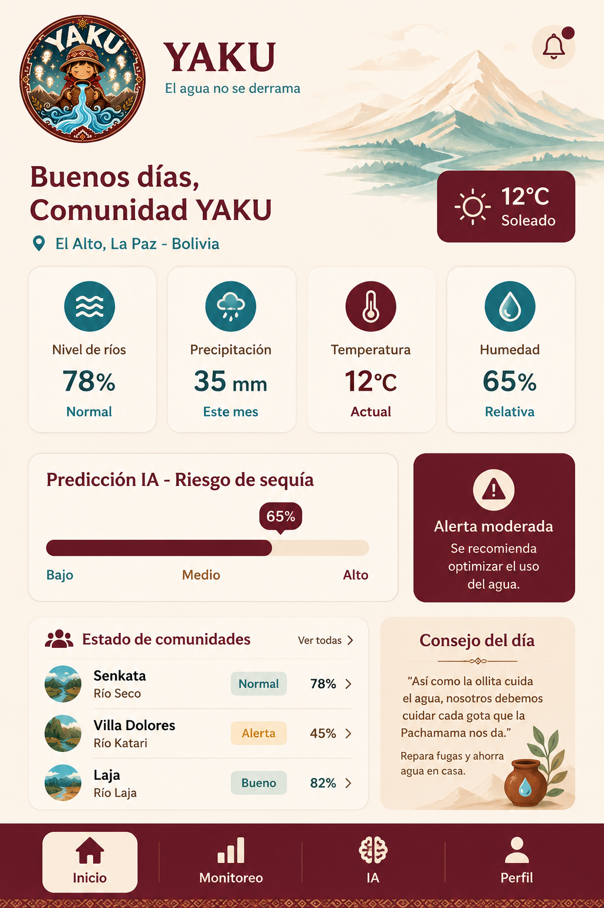

01
PANTALLA PRINCIPAL
Inicio / Dashboard
Pantalla principal con cuatro tarjetas de estadísticas: nivel de ríos, precipitación, temperatura y humedad.
También incorpora predicción de IA, lista de comunidades y una barra de navegación inferior.